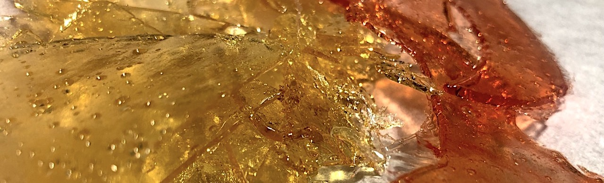

Sugar Stained Glass

Kitchen experiments are a great way to tap into your inner scientist.
One particularly fascinating experiment is creating fake glass using sugar.
What happen when you want to mix two complete different worlds like cooking and glass making?
The answer is: something sweet and imperfect, like all the good human things in this world!
The goal is not to create some “fake glass pieces for halloween cupcakes” but trying to recreate some dust-catching stained glass projects in the baking world.
Ingredients
The internet if full of recipes: with simple white sugar, adding corn syrup (to make the sugar more stable once melted), with a pinch of cream of tartar (that helps by turning the sugar into glucose and fructose), lemon juice, and so on.
Fructose
In my tries, the simplest one that worked fine was: pure fructose.
One. simple. ingredient. Fructose.
History fact: fructose was discovered 150 years ago and it’s like 1.7x times sweeter than the classic sugar!
The only adding is the food coloring. The natural color of sugar glass is transparent-yellowish because of the cooking process of the sugar. If you want to use it, 2-3 drops every 50gr of sugar are enought for coloring.
For the “leading” part you can use just some chocolate. It’s really difficult to make good shapes with it, but when you make some happy accidents you can eat them… so it’s all good!
Instrumemnts
A saucepan, a metallic spoon to mix the sugar, some baking paper (remember that the sugar will become really hot. Put on a baking tray to save your wooden table from burn marks)
If you want to make some geometric cuts like me, you will need also a hot knife or a welder.
How to
The procedure is pretty simple.
The first step is to make a sheet of sugar glass.
In order to do it, put the fructose (50gr is enought for this experiment) into the sauce pan over medium heat. Stir constantly until the sugar boils. When you see the first bubbles pour the mixture on the baking paper and let it cool.
Sugar sheet. With two drops of red food coloring
Both Glass and melted sugar are amorphous solids because their molecules are disorganized and dispersed throughout the material.
Amorphous solids can be “glassy” or “rubbery” in their states.
When we initially tried to prepare sugar glass, if the sugar don’t cool down fast enought, we end up with a bunch of rubbery results (like candies). But if we wait until the complete melting and then let it cool down, the final state will be more hard and stable.
When it’s cooled down, we can start the cutting.
The baking paper usually is semi-transparent. If we make the drawing under it, we can use as reference for cutting!
Drawing of the design
After cutting with a heated tool, let compose it!
Composing of the design
After the composition, the last step is the leading part.
Unlike lead that is toxic, our leading material is absolutely not dangerous: chocolate!
Using some melted chocolate (melts always in bain marie, it’s easy to overcook and ruin it) to connect the pieces, the result is ready!
First try: final result
Learnings
As you can see in the photos, the result is very far from a “good for a bakery product”.
The main problems and headaches come from two things:
- Chocolate: using an improvised pastry bag and not being used to manage melted chocolate that was a tricky part. If you put too much it makes ugly bulges and (unlike the tin that can fixed) there is no possibility to add or heat it again without breaking the sugar glass. It’s a good first take! No retries.
Bulges in chocolate
More experiments with melted chocolate will help with the precision and manuality.
-
Sugar: I used a baking paper. That means an uneven surface. A possible solution is to find some baking layes for chocolate in silicone to use as sheet base and create more regular pieces.
-
Time and environments: sugar glass cannot be keeped in fridge because it makes it really sticky. Also cannot be keeped in a hot environment because it (and also chocolate) will melt. It’s not something that I can do a week before an event. It must be done the same day.
Sugar gives energy to the brain.
Brain give us the power of thought.
And you are wasting your time on this? What a loss!
Probably my parents reading the post